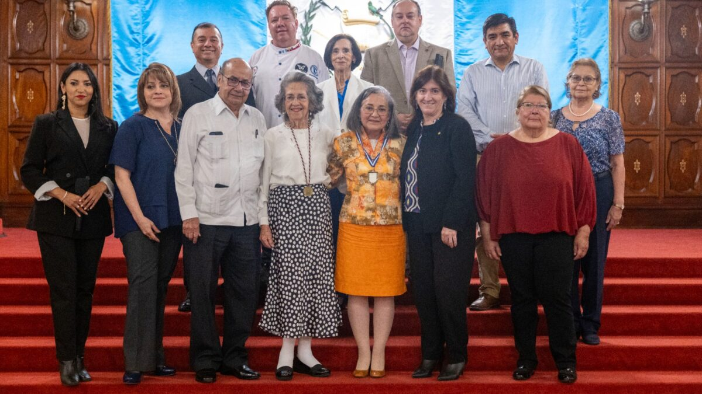
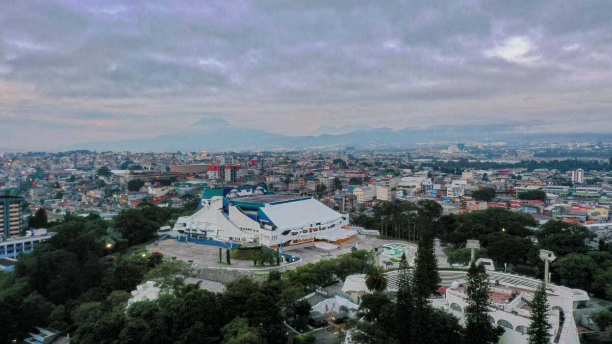

Celebran 500 años de fundación de Quetzaltenango

Con desfiles, actividades artísticas, culturales y deportivas, la ciudad altense celebró sus 500 años de historia «¡Que viva Xela!», gritaban al unísono los asistentes a las
Ministerio de Cultura y Deportes apoyará la realización del Festival Cultural “Rabín Ajaw”
Este año el MCD contribuirá con 54 mil quetzales para la realización de este importante evento en Alta Verapaz. El pasado 28 de mayo se llevó
Celebran 500 años de fundación de Quetzaltenango
Con desfiles, actividades artísticas, culturales y deportivas, la ciudad altense celebró sus 500 años de historia «¡Que viva Xela!», gritaban al unísono los asistentes a las
¡En junio se celebra el talento guatemalteco!

Hemos presentado de forma oficial la 19a edición del Festival de Junio, que conmemora los 46 años de la edificación del gran Teatro Nacional, obra máxima
Conmemoran el Año Nuevo Maya
El Waqxaqib’ B’atz’, o Año Nuevo Maya lunar, se conmemoró este 3 de mayo, un suceso importante del Calendario Maya Cholq’ij. El pasado 3 de mayo
Reciben taller de pintura en el Palacio
El Palacio Nacional de la Cultura fue el escenario de un taller de pintura en acuarela. Fotos: Joseph Alvarado Los participantes realizaron pinturas de la fachada
Rinden homenaje a Dolores Repetto, ministra de cultura de la embajada mexicana
La ministra de cultura de la Embajada de México en Guatemala, dejará el país tras 8 años de servicio en los que contribuyó a estrechar los
Inician los preparativos para el Festival de Junio 2024
La decimonovena edición del Festival de Junio promete deleitar al público con más de treinta producciones de alta calidad en los diversos espacios del Centro Cultural
Reciben premio del Certamen Permanente Centroamericano “15 de Septiembre”
El Ministerio de Cultura y Deportes reconoce la importancia del arte en la región y entrega reconocimiento a artistas que representaron la cultura en distintas disciplinas
Mujeres de Sepur Zarco son beneficiadas con insumos de barro para el rescate de técnicas ancestrales de alfarería
La Dirección General de Desarrollo Cultural y Fortalecimiento de las Culturas, este 7 de octubre, entregó insumos de barro para el rescate y fortalecimiento de las